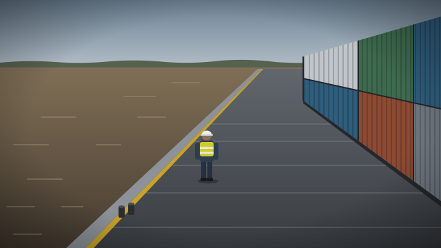
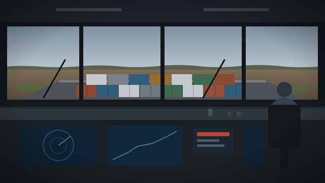
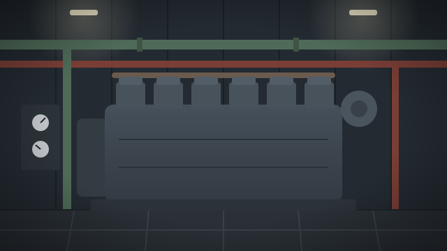
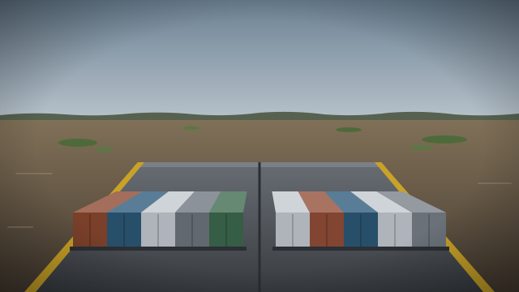
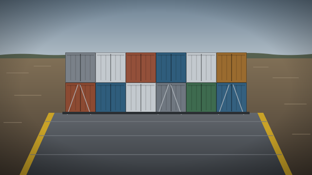
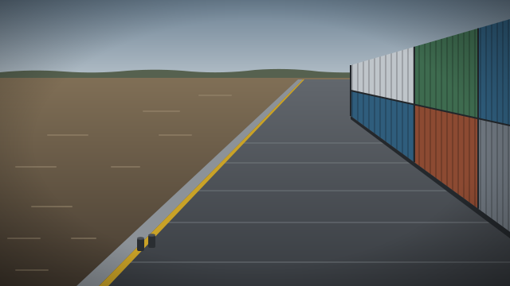
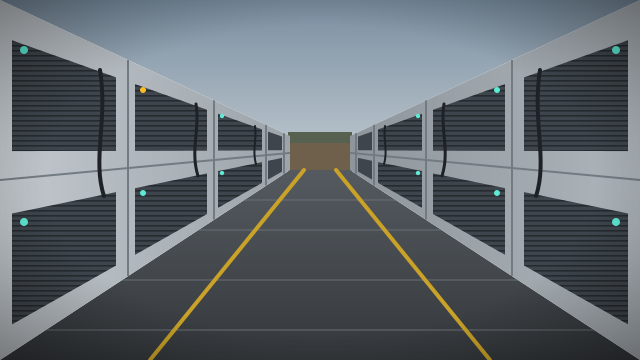

CCTV Monitoring
G
GFSA
Production
Search vessels, cameras, alarms
Ctrl K
All convoys
14:36:20 Asunción
4
DO
Duty officer
Shore operations
Operations
/ Video wall
Video wall
Layout
GF Tuyutí convoy
Focus + 8
3 × 3
4 × 4
AI overlays
Live budget
· 20% of a 10 Mbps 4G link
1.3 / 2.0 Mbps
Focus in HD, 6 tiles in SD at 150 kbps, 2 on snapshot

Water edge zone
Person · no life jacket · 0.87
Guarán F 503 · Port edge
pinned by alarm
LIVE HD · 14:36:18
P2 High
Life jacket missing near the water
14:32:06 · acknowledged on board
Open alarm

Watchkeeper present
LIVE SD
Tug · Wheelhouse

LIVE SD
Tug · Engine room

P3 · Blurred since 13:20
LIVE SD
Tug · Bow forward

LIVE SD
F 501 · Deck forward

Held at snapshot to stay in budget
SNAP 14:35
F 501 · Port edge

P3 · 14:00 round not seen
LIVE SD
F 501 · Reefer row 1
LIVE SD
F 503 · Deck forward
Held at snapshot to stay in budget
SNAP 14:34
F 503 · Reefer row 2
Alarms on this layout
3 open
Alarm console
P2
Life jacket missing near the water
F 503 · Port edge · escalates in 1:31
Acknowledge
P3
14:00 reefer round not seen
F 501 · Reefer row 1 · missed at 15:00
P3
Camera image blurred
Tug · Bow forward · duty officer